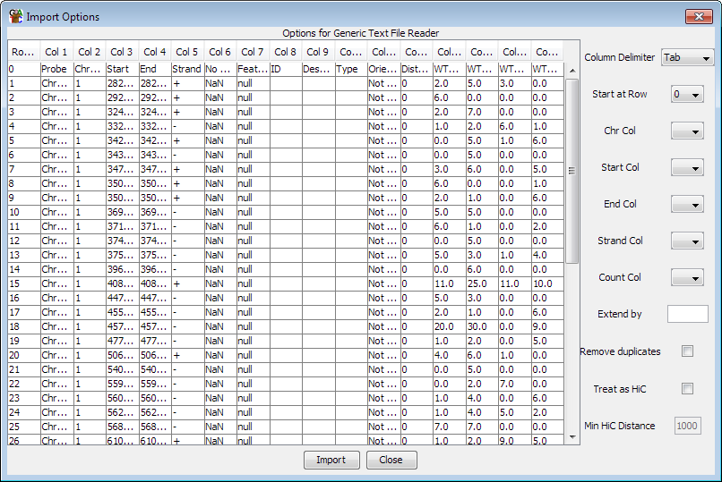

Generic Text File Import
If you have data in a non-standard format then you can use the generic
text file import tool to bring it into SeqMonk. You can import multiple
files at the same time as long as they all use exactly the same format.
The only restrictions on the import are:
- Each file should contain data for only one sample
- The file must be a plain text file (not a binary file such as a .doc or .xls)
- The fields in the file must be separated by a delimiting character (tab, space or comma)
- The file must contain a chromosome name and a start and end point. It can optionally include a strand or a count
If your data satisfies these constraints then you can import it into
SeqMonk.
Once you have selected the files you want to import you will see a screen which
looks like this:

The values you need to set are all contained in the drop down boxes on the
right.
-
Column Delimiter: This is the character used to separate the fields in your file.
- Start At Row: Set this to the row number of the first line of actual data. This
lets you remove any headers from your file.
- Chr Col: The column containing the chromosome information. This can be a raw
chromosome name or a name starting with chr followed by the chromosome name.
- Start / End Col: The start and end points for the read. It doesn't matter if
the end is lower than the start as SeqMonk will reverse them automatically.
- Strand Col: This column is optional so you can leave it unset. The parser
understands '+', '1', or 'FF' for forward strand and '-', '-1' or 'RF' for reverse strand.
- Count Col: This column is optional so you can leave it unset. This column can contain a count
value so that the read specified will be duplicated this number of times.
Once you've set your options you just press the import button to import your data.
Your samples will be named after the files from which they came.